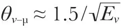
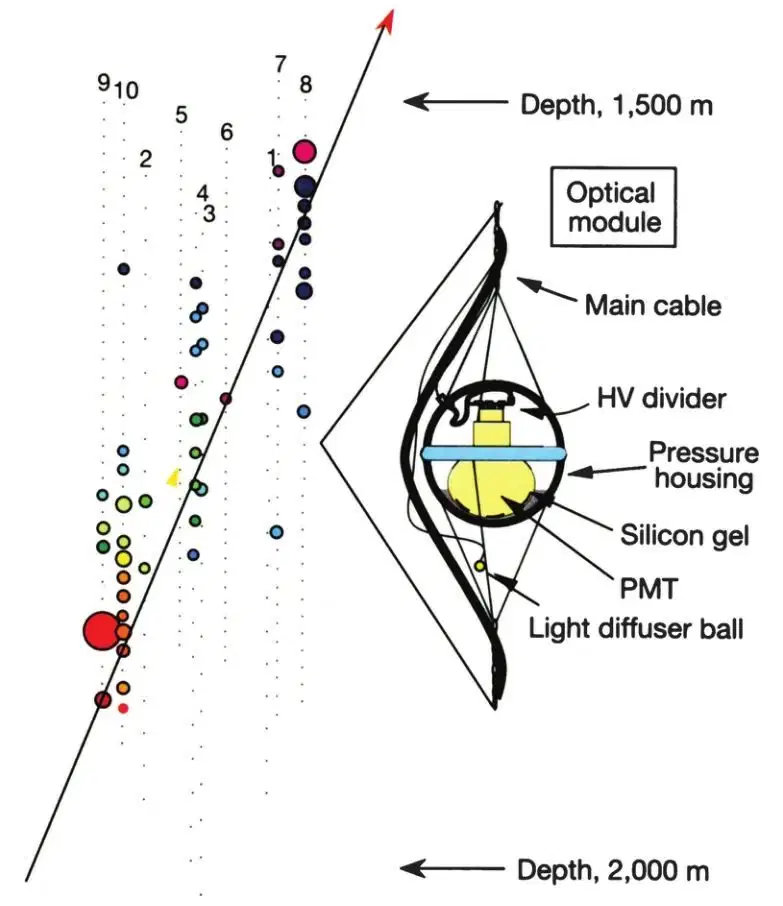
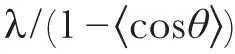
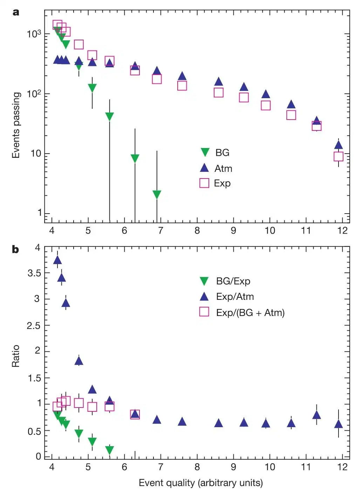
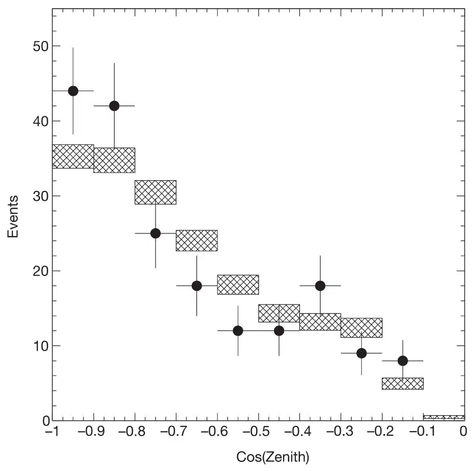
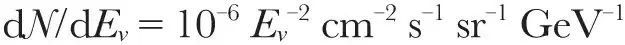
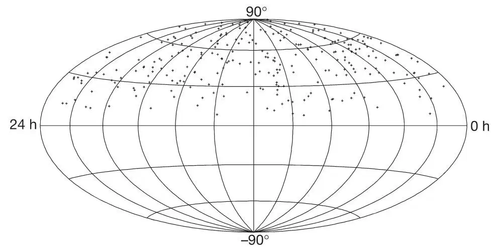

中文
中文E. Andrés et al.
Editor’s Note
Neutrinos are chargeless and almost massless elementary particles. They interact with other matter only through the weak force, and therefore can penetrate large amounts of matter—neutrinos from the Sun are constantly streaming through the Earth. This weak interaction makes them difficult to detect. Here an international team of scientists report a proof-of-concept experiment called AMANDA, in which they set detectors in clear ice in the Antarctic and looked for the characteristic flashes of light emitted when a particle called a muon is created by interaction of a neutrino with an atomic nucleus. A subsequent project using a much larger volume of ice as the detector, called IceCube, is now operating near the South Pole. 中文
Neutrinos are elementary particles that carry no electric charge and have little mass. As they interact only weakly with other particles, they can penetrate enormous amounts of matter, and therefore have the potential to directly convey astrophysical information from the edge of the Universe and from deep inside the most cataclysmic high-energy regions1. The neutrino’s great penetrating power, however, also makes this particle difficult to detect. Underground detectors have observed low-energy neutrinos from the Sun and a nearby supernova2, as well as neutrinos generated in the Earth’s atmosphere. But the very low fluxes of high-energy neutrinos from cosmic sources can be observed only by much larger, expandable detectors in, for example, deep water3,4 or ice5. Here we report the detection of upwardly propagating atmospheric neutrinos by the ice-based Antarctic muon and neutrino detector array (AMANDA). These results establish a technology with which to build a kilometre-scale neutrino observatory necessary for astrophysical observations1. 中文
HIGH-ENERGY neutrinos must be generated in the same astrophysical sources that produce high-energy cosmic rays1. These sources are a matter of speculation, but are thought to reside in shocked or violent environments such as are found in supernova remnants, active galactic nuclei, and gamma-ray bursters. The interaction of any high-energy proton or nucleus with matter or radiation in the source will produce neutrinos, some of which will have line-of-sight trajectories to Earth. AMANDA detects neutrinos with energies above a few tens of GeV by observing the Čerenkov radiation from muons that are produced in neutrino–nucleon interactions in the ice surrounding the detector or in the bedrock below6. This Čerenkov light is detected by an array of photomultiplier tubes (Fig. 1), which are buried deep in the ice in order to minimize the downward flux of muons produced in cosmic-ray interactions in the atmosphere. These muons constitute the main background for AMANDA. To ensure that the detected muons are produced by a neutrino, we use the Earth as a filter and look for upwardly propagating muons that perforce must have been produced by a neutrino that passed through the Earth. From the relative arrival times of the Čerenkov photons, measured with a precision of a few nanoseconds, we can reconstruct the track of the muon. The direction of the neutrino and muon are collinear within an angle

degrees, where Eν is measured in TeV, thus enabling us to search for point sources of high energy neutrinos. 中文

Fig. 1. The AMANDA-B10 detector and a schematic diagram of an optical module. Each dot represents an optical module. The modules are separated by 20 m on the inner strings (1 to 4), and by 10 m on the outer strings (5 to 10). The coloured circles show pulses from the photomultipliers for a particular event; the sizes of the circles indicate the amplitudes of the pulses and the colours correspond to the time of a photon’s arrival. Earlier times are in red and later ones in blue. The arrow indicates the reconstructed track of the upwardly propagating muon. 中文
Upwardly propagating atmospheric neutrinos are a well understood source that can be used to verify the detection technique. The results reported here are from analyses of experimental data acquired in 138 days of net operating time during the Antarctic winter of 1997. At that time the detector consisted of 302 optical modules deployed on ten strings at depths of between 1,500 m and 2,000 m (Fig. 1). The instrumented volume is a cylinder of approximately 120 m in diameter and 500 m in height. An optical module consists of an 8-inch photomultiplier tube housed in a glass pressure vessel. A cable provides the high voltage and transmits the anode current signals to the data acquisition electronics at the surface. Figure 1 also shows a representative event that has satisfied the selection criteria for an upwardly moving muon. The effective detection area for muons varies from about 3,000 m2 at 100 GeV to about 4×104 m2 for the higher-energy muons (≥100 TeV) that would be produced by neutrinos coming from, for example, the same cosmic sources that produce gamma-ray bursts7. 中文
Because a knowledge of the optical properties of the ice is essential for track reconstruction, these have been studied extensively8,9. The absorption length of blue and ultraviolet light (the relevant wavelengths for our purposes) varies between 85 m and 225 m, depending on depth. The effective scattering length, which combines the mean free path λ with the average scattering angle θ through

, varies from 15 m to 40 m. In order to reconstruct the muon tracks we use a maximum-likelihood method, which incorporates the scattering and absorption of photons as determined from calibration measurements. A bayesian formulation of the likelihood takes into account the much larger rate of downward muons relative to the upward signal and is particularly effective in decreasing the chance for a downward muon to be mis-reconstructed as upward. (See refs 6 and 10–13 for more information on optical properties of ice, calibration, and analysis techniques.) 中文
Certain types of events that might appear to be upwardly propagating muons must be considered and eliminated. Rare cases, such as muons that undergo catastrophic energy loss through bremsstrahlung, or that are coincident with other muons, must be investigated. To this end, a series of requirements or quality criteria, based on the characteristic time and spatial pattern of photons associated with a muon track and the response of our detector, are applied to all events that, in a first assessment, appear to be upwardly moving muons. For example, an event that has a large number of optical modules hit by prompt (that is, unscattered) photons, has a high quality. By making these requirements (or “cuts”) increasingly selective, we eliminate correspondingly more of the background of false upward events while still retaining a significant fraction of the true upwardly moving muons. Because there is a large space within which the parameters defining these cuts can be optimized, two different and independent analyses of the same set of data have been undertaken. These analyses yielded comparable numbers of upwardly propagating muons (153 in analysis A, 188 in analysis B). Comparison of these results with their respective Monte Carlo simulations shows that they are consistent with each other in terms of the number of events, the number of events in common and, as discussed below, the expected properties of atmospheric neutrinos. 中文
In Fig. 2a, the number of experimental events is compared to simulations of background and signal as a function of the (identical) quality requirements placed on the three types of events: experimental data, simulated upwardly moving muons from atmospheric neutrinos, and a simulated background of downwardly moving cosmic-ray muons. For simplicity in presentation, the levels of the individual cuts have been combined into a single parameter representing the overall event quality. Figure 2b shows ratios of the quantities plotted above. As the quality level is increased, the ratios of simulated background to experimental data, and of experimental data to simulated signal, both continue their rapid decrease, the former toward zero and the latter toward 0.7. Over the same range, the ratio of experimental data to the simulated sum of background and signal remains nearly constant. We conclude that the quality requirements have reduced the presence of wrongly reconstructed downward muons in the experimental data to a negligible fraction of the signal and that the experimental data behave in the same way as the simulated atmospheric neutrino signal for events that pass the stringent cuts. The estimated uncertainty on the number of events predicted by the signal Monte Carlo simulation, which includes uncertainties in the high-energy atmospheric neutrino flux, the in situ sensitivity of the optical modules, and the precise optical properties of the ice, is +40% / -50%. The observed ratio of experiment to simulation (0.7) and the expectation (1.0) therefore agree within the estimated uncertainties. 中文

Fig. 2. Experimental data confront expectations. The numbers of reconstructed upwardly moving muon events for the experimental data (Exp) from analysis A are compared to simulations of background cosmic-ray muons (BG) and simulations of atmospheric neutrinos (Atm) as a function of “event quality”, a variable indicating the combined severity of the cuts designed to enhance the signal. The comparison begins at a quality level of 4. Cuts were made on a number of parameters including the reconstructed zenith angle (>100 degrees), maximum likelihood of the reconstruction, topological distributions of the detected photons, and the number of optical modules recording unscattered photons. The optimum levels of the cuts were determined by comparing the relative rejection rates for Monte Carlo simulated neutrino events and background events. b, Ratios of the quantities shown in a. 中文
The shape of the zenith-angle distribution of the 188 events from analysis B is compared to a simulation of the atmospheric neutrino signal in Fig. 3, where the absolute Monte Carlo rate has been normalized to the experimental rate. The variation of the measured rate with zenith angle is reproduced by the simulation to within the statistical uncertainty. We note that the tall geometry of the detector favours the more vertical muons. The arrival directions of the upwardly moving muons observed in both analyses are shown in Fig. 4. A statistical analysis indicates no evidence for point sources in these samples. The agreement between experiment and simulation of atmospheric neutrino signal, as demonstrated in Figs 2 and 3, taken together with comparisons for a number of other variables (to be published elsewhere) leads us to conclude that the upcoming muon events observed by AMANDA are produced mainly by atmospheric neutrinos with energies of about 50 GeV to a few TeV. The background in this event sample is estimated to be 15±7% events, and is due to misreconstructions. 中文

Fig. 3. Reconstructed zenith angle distribution. The data points are experimental data (from analysis B) and the shaded boxes are a simulation of atmospheric neutrino events, the widths of the boxes indicating the error bars. The overall normalization of the simulation has been adjusted to fit the data. The possible effects of neutrino oscillations on the flux and its zenith angle dependence estimated from the Super-Kamiokande measurements20, are expected to be small in our energy range. 中文
From the consistency of the selected event sample with muons generated by atmospheric neutrinos, and in particular the absence of an excess of high-energy events with a large number of optical modules that had been hit, we can determine an upper limit on a diffuse extraterrestrial neutrino flux. Assuming a hard E －2 spectrum characteristic of shockwave acceleration, we expect to reach a sensitivity of order

. This value is low enough to be in the range where a number of models14-19 predict fluxes, a few of which are larger15,16. Most recent estimates are smaller17-19. The present level of sensitivity and the prospects for improving it through longer exposure times and better determination of muon energy illustrate the ability of large-area detectors to test theoretical models that assume the hadronic origin of TeV photons from active galaxies—models which would be difficult to confirm or exclude without the ability to observe high-energy neutrinos. 中文

Fig. 4. Distribution in declination and right ascension of the upwardly propagating events on the sky. The 263 events shown here are taken from the upward muons contained in both analysis A and analysis B. The median difference between the true and the reconstructed muon angles is about 3 to 4 degrees. 中文
Searches for neutrinos from gamma-ray bursts, for magnetic monopoles, supernova collapses and for a cold dark matter signal from the centre of the Earth are also in progress and, with only 138 days of data, yield limits comparable to or better than those from smaller underground neutrino detectors that have operated for a much longer period (see refs 10–13). 中文
From 1997 to 1999 an additional nine strings were added in a concentric cylinder around AMANDA-B10. This larger detector, called AMANDA-II, consists of 677 optical modules and has an improved acceptance for muons over a larger angular interval. Data are being taken now with the larger array. Yet the fluxes of very high energy neutrinos predicted by theoretical models14 or derived from the observed flux of ultra high energy cosmic rays19 are sufficiently low that a neutrino detector having an effective area up to a square kilometre is required for their observation and study1,14. Plans are therefore being made for a much larger detector, IceCube, consisting of 4,800 photomultipliers to be deployed on 80 strings. This proposed neutrino telescope would have an effective area of about 1 km2, an energy threshold near 100 GeV and a pointing accuracy for muons of better than one degree for high-energy events. In conclusion, the observation of neutrinos by a neutrino telescope deep in the Antarctic ice cap, a goal that was once thought difficult if not impossible, represents an important step toward establishing the field of high-energy neutrino astronomy first envisioned over 40 years ago. 中文
(410, 441-443; 2001)
E. Andrés*, P. Askebjer†, X. Bai‡, G. Barouch*, S. W. Barwick§, R. C. Bay║, K.-H. Becker¶, L. Bergström†, D. Bertrand#, D. Bierenbaum§, A. Biron☆, J. Booth§, O. Botner**, A. Bouchta☆, M. M. Boyce*, S. Carius††, A. Chen*, D. Chirkin║¶, J. Conrad**, J. Cooley*, C. G. S. Costa#, D. F. Cowen‡‡, J. Dailing§, E. Dalberg†, T. DeYoung*, P. Desiati☆, J.-P. Dewulf#, P. Doksus*, J. Edsjö†, P. Ekström†, B. Erlandsson†, T. Feser§§, M. Gaug☆, A. Goldschmidt||||, A. Goobar†, L. Gray*, H. Haase☆, A. Hallgren**, F. Halzen*, K. Hanson‡‡, R. Hardtke*, Y. D. He║, M. Hellwig§§, H. Heukenkamp☆, G. C. Hill*, P. O. Hulth†, S. Hundertmark§, J. Jacobsen||||, V. Kandhadai*, A. Karle*, J. Kim§, B. Koci*, L. Köpke§§, M. Kowalski☆, H. Leich☆, M. Leuthold☆, P. Lindahl††, I. Liubarsky*, P. Loaiza**, D. M. Lowder║, J. Ludvig||||, J. Madsen*, P. Marciniewski**, H. S. Matis||||, A. Mihalyi‡‡, T. Mikolajski☆, T. C. Miller‡, Y. Minaeva†, P. Miočinović║, P. C. Mock§, R. Morse*, T. Neunhöffer§§, F. M. Newcomer‡‡, P. Niessen☆, D. R. Nygren||||, H. Ögelman*, C. Pérez de los Heros**, R. Porrata§, P. B. Price║, K. Rawlins*, C. Reed§, W. Rhode¶, A. Richards║, S. Richter☆, J. Rodríguez Martino†, P. Romenesko*, D. Ross§, H. Rubinstein†, H. -G. Sander§§, T. Scheider§§, T. Schmidt☆, D. Schneider*, E. Schneider§, R. Schwarz*, A. Silvestri¶☆, M. Solarz║, G. M. Spiczak‡, C. Spiering☆, N. Starinsky*, D. Steele*, P. Steffen☆, R. G. Stokstad||||, O. Streicher☆, Q. Sun†, I. Taboada‡‡, L. Thollander†, T. Thon☆, S. Tilav*, N. Usechak§, M. Vander Donckt#, C. Walck†, C. Weinheimer§§, C. H. Wiebusch☆, R. Wischnewski☆, H. Wissing☆, K. Woschnagg║, W. Wu§, G. Yodh§ & S. Young§
* Department of Physics, University of Wisconsin, Wisconsin, Madison 53706, USA
† Fysikum, Stockholm University, S-11385 Stockholm, Sweden
‡ Bartol Research Institute, University of Delaware, Newark, Delaware 19716, USA
§ Department of Physics and Astronomy, University of California, Irvine, California 92697, USA
║ Department of Physics, University of California, Berkeley, California 94720, USA
¶ Fachbereich 8 Physik, BUGH Wuppertal, D-42097 Wuppertal, Germany
# Brussels Free University, Science Faculty CP230, Boulevard du Triomphe, B-1050 Brussels, Belgium
☆ DESY-Zeuthen, D-15735 Zeuthen, Germany
** Department of Radiation Sciences, Uppsala University, S-75121 Uppsala, Sweden
†† Department of Technology, Kalmar University, S-39129 Kalmar, Sweden
‡‡ Department of Physics and Astronomy, University of Pennsylvania, Philadelphia, Pennsylvania 19104, USA
§§ Institute of Physics, University of Mainz, Staudinger Weg 7, D-55099 Mainz, Germany
|||| Institute for Nuclear and Particle Astrophysics, Lawrence Berkeley National Laboratory, Berkeley, California 94720, USA
Received 15 September 2000; accepted 25 January 2001.
References:
1. Gaisser, T. K., Halzen, F. & Stanev, T. Particle physics with high-energy neutrinos. Phys. Rep. 258, 173-236 (1995).
2. Totsuka, Y. Neutrino astronomy. Rep. Prog. Phys. 55, 377-430 (1992).
3. Roberts, A. The birth of high-energy neutrino astronomy: A personal history of the DUMAND project. Rev. Mod. Phys. 64, 259-312 (1992).
4. Balkanov, V. A. et al. An upper limit on the diffuse flux of high energy neutrinos obtained with the Baikal detector NT-96. Astropart. Phys. 14, 61-67 (2000).
5. Lowder, D. M. et al. Observation of muons using the polar ice as a Čerenkov detector. Nature 353, 331-333 (1991).
6. Andres, E. et al. The AMANDA neutrino telescope: Principle of operation and first results. Astropart. Phys. 13, 1-20 (2000).
7. Waxman, E. & Bahcall, J. N. High-energy neutrinos from cosmological gamma ray burst fireballs. Phys. Rev. Lett. 78, 2992-2295 (1997).
8. Askjeber, P. et al. Optical properties of the south pole ice at depths between 0.8 and 1 km. Science 267, 1147-1150 (1995).
9. Price, B. P. Implications of optical properties of ocean, lake, and ice for ultrahigh-energy neutrino detection. Appl. Opt. 36, 1965-1975 (1997).
10. Wischnewski, R. et al. in Proc. 26th Int. Cosmic Ray Conf., Salt Lake City Vol. 2 (eds Kieda, D., Salamon, M. & Dingus, B.) 229-232 (1999).
11. Dalberg, E. et al. in Proc. 26th Int. Cosmic Ray Conf., Salt Lake City Vol. 2 (eds Kieda, D., Salamon, M. & Dingus, B.) 348-351 (1999).
12. Bay, R. et al. in Proc. 26th Int. Cosmic Ray Conf., Salt Lake City Vol. 2 (eds Kieda, D., Salamon, M. & Dingus, B.) 225-228 (1999).
13. Niessen, P. et al. in Proc. 26th Int. Cosmic Ray Conf., Salt Lake City Vol. 2 (eds Kieda, D., Salamon, M. & Dingus, B.) 344-347 (1999).
14. Learned, J. G. & Mannheim, K. High-energy neutrino astrophysics. Ann. Rev. Nucl. Sci. 50, 679-749 (2000).
15. Szabo, A. P. & Protheroe, R. J. Implications of particle acceleration in active galactic nuclei for cosmic rays and high-energy neutrino astronomy. Astropart. Phys. 2, 375-392 (1994).
16. Stecker, F. W. & Salamon, M. H. High-energy neutrinos from quasars. Space Sci. Rev. 75, 341-355 (1996).
17. Nellen, L., Mannheim, K. & Biermann, P. L. Neutrino production through hadronic cascades in AGN accretion disks. Phys. Rev. D 47, 5270-5274 (1993).
18. Mannheim, K., Protheroe, R. J. & Rachen, J. P. Cosmic ray bound for models of extragalactic neutrino production. Phys. Rev. D 63, 023003-1–023003-16 (2001).
19. Waxman, E. & Bahcall, J. N. High energy neutrinos from astrophysical sources. An upper bound. Phys. Rev. D 59, 023002-1–023002-8 (1999).
20. Fukuda, Y. et al. (Super-Kamiokande Collaboration) Measurement of the flux and zenith-angle distribution of upward through-going muons by Super-Kamiokande. Phys. Rev. Lett. 82, 2644-2648 (1999).
Acknowledgements. This research was supported by the following agencies: US National Science Foundation, Office of Polar Programs; US National Science Foundation, Physics Division; University of Wisconsin Alumni Research Foundation; US Department of Energy; Swedish Natural Science Research Council; Swedish Polar Research Secretariat; Knut and Allice Wallenberg Foundation, Sweden; German Ministry for Education and Research; US National Energy Research Scientific Computing Center (supported by the Office of Energy Research of the US Department of Energy); UC-Irvine AENEAS Supercomputer Facility; Deutsche Forschungsgemeinschaft (DFG). D.F.C. acknowledges the support of the NSF CAREER programme and C.P.d.l.H. acknowledges support from the European Union 4th Framework of Training and Mobility of Researchers.
Correspondence and requests for materials should be addressed to F.H. (e-mail: halzen@pheno.physics.wisc.edu).